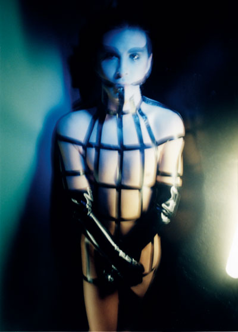

exhibition archive | ||
Back to the FutureRob Roth |
 The Wild Project is pleased to present Back to the Future, a solo exhibition of photographs by Rob Roth October 13th – 30th 2010. The works in this exhibition were created specifically for the spectacular New York club event Click + Drag, which ran for four years beginning in 1996. Founded by Roth with nightlife legends Chi Chi Valenti and Kitty Boots, Click + Drag began as a Saturday-night weekly event at Valenti’s experimental MOTHER nightclub and ran for four years in over two hundred editions, each with a different theme. Exploring the interface between nightclubs and computer culture with a strictly enforced dress code, the event quickly built a fanatic following. The textures of those nights were otherworldly, created and enhanced by Roth’s pioneering video installations and performances that both encouraged and complimented the antics of his guests. Created between 1999 and 2001, most of the photographs selected for the exhibition were shot for Click + Drag’s much coveted and collected flyers. The flyers depicted an eclectic mix of rock stars, dominatrixes, transsexuals, strippers and fetishists. Necessity was the mother of invention for Roth, who shot the portraits in his small Manhattan studio apartment with Kitty Boots as stylist and Marla Belt on makeup. Despite Roth’s well-regarded reputation as a pioneering digital artist, the majority of the images were deliberately shot using 35 mm film and printed on the now discontinued Fujiflex paper, with absolutely no retouching. Always going against the trend Roth made this decision as the world went digital. The results were small color prints that possess a striking, oversaturated, jewel-like quality and present the subjects as iconic, patron saints of desire, transformation and sexuality. Three of the images in this exhibition are more recent digital portraits made for Roth’s new large-scale annual incarnations of Click + Drag between 2008 and 2010. But regardless of year or venue, the images all share a common love of beauty, transformation and above all, the night. The New York City-born director and visual artist has been a persistent and influential presence in the city’s downtown art and culture since the early 1990’s. His work draws from photography, video, painting, dramaturgy and theater to create experiences that transcend the limits of media and performance. His work has been presented at a variety of venues including the New Museum for Contemporary Art, Performance Space122, Abrons Art Center, Galapagos Art Space, and Deitch Projects as well as the Whitney Museum of American Art. Recently Roth was part of the London Biennale NYC Satellite Event at the Christopher Henry Gallery and will also be premiering the video version of his award winning performance piece Screen Test at the Museum of Art and Design in late October. FROM THE ARTISTS, ABOUT ROB ROTH: I always said that visual artist Rob Roth was a nouveau Cocteau. Rob is a true artist/ auteur/ shaman of the new century. He has exquisite taste, astounding technical skills, and above all a vision that is all encompassing...but most of all... he pulls it off. Sex fiend, drunkard, visionary Populated by androgens and beauties in various states of perverse/glamorous dress, Roth's images portray characters living in a haunted, future-is-now world all of their own, oblivious to the machinations of daylight culture. | |
exhibition archive |
|||
| 2016 | 2015 | 2014 | 2013 |
| 2011 | 2010 | 2009 | 2008 |